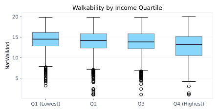

<!doctype html>
<html lang="en">
<head>
  <meta charset="UTF-8" />
  <meta name="viewport" content="width=device-width, initial-scale=1" />
  <title>Walkability in LA County</title>
  <link rel="preconnect" href="https://fonts.googleapis.com">
  <link rel="preconnect" href="https://fonts.gstatic.com" crossorigin>
  <link href="https://fonts.googleapis.com/css2?family=Manrope:wght@400;500;600&family=Sora:wght@500;600;700&display=swap" rel="stylesheet">
  <link
    rel="stylesheet"
    href="https://unpkg.com/leaflet@1.9.4/dist/leaflet.css"
    integrity="sha256-p4NxAoJBhIIN+hmNHrzRCf9tD/miZyoHS5obTRR9BMY="
    crossorigin=""
  />
  <script src="https://cdn.tailwindcss.com"></script>
  <script>
    tailwind.config = {
      theme: {
        extend: {
          colors: {
            ink: "#1f2937",
            asphalt: "#0f172a",
            sand: "#fff7ef",
            haze: "#f8fafc",
            sunset: "#f97316",
            ocean: "#0ea5e9",
            palm: "#16a34a",
            coral: "#fb7185",
          },
          fontFamily: {
            display: ["Sora", "system-ui", "sans-serif"],
            body: ["Manrope", "system-ui", "sans-serif"],
          },
          boxShadow: {
            soft: "0 12px 28px rgba(15, 23, 42, 0.12)",
          },
        },
      },
    };
  </script>
  <style>
    html {
      font-size: 15px;
    }

    body {
      font-family: "Manrope", system-ui, sans-serif;
      background:
        radial-gradient(900px 520px at 85% -10%, rgba(249, 115, 22, 0.18), transparent 55%),
        radial-gradient(760px 520px at 0% 0%, rgba(14, 165, 233, 0.16), transparent 60%),
        linear-gradient(180deg, #fff7ef 0%, #ffffff 48%, #f8fafc 100%);
      color: #1f2937;
    }

    .route-dash {
      background: repeating-linear-gradient(90deg, rgba(249, 115, 22, 0.9) 0 16px, transparent 16px 28px);
    }

    .glow-node {
      box-shadow: 0 0 0 6px rgba(249, 115, 22, 0.12), 0 0 20px rgba(249, 115, 22, 0.3);
    }

    .divider-line {
      background: linear-gradient(90deg, rgba(14, 165, 233, 0.15), rgba(249, 115, 22, 0.35), rgba(14, 165, 233, 0.15));
    }

    .float-card {
      animation: floatCard 10s ease-in-out infinite alternate;
    }

    @keyframes floatCard {
      0% { transform: translateY(0); }
      100% { transform: translateY(-8px); }
    }

    @media (prefers-reduced-motion: reduce) {
      .float-card { animation: none; }
    }

    .map-shell {
      height: 520px;
    }

    @media (max-width: 768px) {
      .map-shell {
        height: 420px;
      }
    }

    .leaflet-container {
      font-family: "Manrope", system-ui, sans-serif;
    }

    .leaflet-tooltip {
      background: #ffffff;
      border: 1px solid #e2e8f0;
      color: #1f2937;
      box-shadow: 0 10px 24px rgba(15, 23, 42, 0.12);
      border-radius: 6px;
      padding: 6px 10px;
    }

    .leaflet-tooltip:before {
      border-top-color: #ffffff;
    }

    .timeline-shell {
      border: 1px solid #e2e8f0;
      border-radius: 8px;
      overflow: hidden;
      background: linear-gradient(180deg, #fffaf5 0%, #ffffff 100%);
    }

    .timeline-frame {
      width: 100%;
      height: 650px;
      border: 0;
      display: block;
    }

    @media (max-width: 768px) {
      .timeline-shell {
        border-radius: 6px;
      }

      .timeline-frame {
        height: 560px;
      }
    }
  </style>
</head>
<body class="min-h-screen">
  <div id="root"></div>

  <script
    src="https://unpkg.com/leaflet@1.9.4/dist/leaflet.js"
    integrity="sha256-20nQCchB9co0qIjJZRGuk2/Z9VM+kNiyxNV1lvTlZBo="
    crossorigin=""
  ></script>
  <script src="https://unpkg.com/react@18/umd/react.production.min.js"></script>
  <script src="https://unpkg.com/react-dom@18/umd/react-dom.production.min.js"></script>
  <script src="https://unpkg.com/@babel/standalone/babel.min.js"></script>

  <script type="text/babel">
    const { useEffect, useMemo, useState } = React;

    const navItems = [
      { id: "home", label: "Home" },
      { id: "data", label: "Data" },
      { id: "narrative", label: "Narrative" },
      { id: "timeline", label: "Timeline" },
      { id: "map", label: "Map" },
      { id: "case-study", label: "Case Study" },
      { id: "methods", label: "Methods" },
      { id: "team", label: "Team" },
      { id: "resources", label: "Resources" },
    ];

    const pageLinks = [
      { href: "index.html", label: "Narrative" },
      { href: "about.html", label: "About" },
      { href: "critique.html", label: "Data Critique" },
      { href: "bibliography.html", label: "Bibliography" },
    ];

    const storySteps = [
      {
        id: "q1",
        title: "Question 1: Where are the highest and lowest walkability scores?",
        body:
          "We map NatWalkInd across LA County to see how walkability clusters across block groups.",
        image: "images/walkability_map.png",
        alt: "Walkability index map for LA County",
        caption: "Figure 1: National Walkability Index map (LA County block groups)",
      },
      {
        id: "q2",
        title: "Question 2: Are car-free households matched by transit access?",
        body:
          "We plot car-free household share (Pct_AO0) against transit access (D4A). The trend line highlights the overall relationship across block groups.",
        image: "images/carfree_vs_transit.svg",
        alt: "Car-free households vs transit access scatter",
        caption: "Figure 2: Car-free households vs transit access",
      },
      {
        id: "q3",
        title: "Question 3: Does low-wage share explain walkability?",
        body:
          "We test whether low-wage share (R_PCTLOWWAGE) aligns with walkability scores. This helps separate income effects from built-environment effects.",
        image: "images/lowwage_vs_walkability.svg",
        alt: "Low-wage share vs walkability scatter",
        caption: "Figure 3: Low-wage share vs walkability",
      },
    ];

    const dataSources = [
      {
        name: "EPA Smart Location Database (SLD)",
        detail: "Block-group walkability index and built-environment measures.",
      },
      {
        name: "Census / ACS 2019",
        detail: "Population, income, and household context joined to SLD geographies.",
      },
      {
        name: "TIGER/Line block group boundaries",
        detail: "Geometries used to render the LA County interactive map.",
      },
      {
        name: "Transit access (GTFS)",
        detail: "Transit stop proximity and service access inputs inside SLD.",
      },
      {
        name: "LEHD employment",
        detail: "Job density and employment mix used in walkability scoring.",
      },
    ];

    const toolList = [
      {
        name: "Tableau",
        reason: "Interactive dashboards and quick regional comparisons.",
        color: "border-sky-200 bg-sky-50",
      },
      {
        name: "Python",
        reason: "Cleaning, joins, statistics, and repeatable charts.",
        color: "border-emerald-200 bg-emerald-50",
      },
      {
        name: "ArcGIS",
        reason: "Geographic mapping and boundary work.",
        color: "border-amber-200 bg-amber-50",
      },
      {
        name: "Leaflet",
        reason: "Interactive map rendering with hover tooltips.",
        color: "border-orange-200 bg-orange-50",
      },
      {
        name: "TimelineJS",
        reason: "Embedded historical narrative using Knight Lab's hosted timeline component.",
        color: "border-rose-200 bg-rose-50",
      },
    ];


    function useScrollProgress() {
      const [progress, setProgress] = useState(0);
      useEffect(() => {
        const onScroll = () => {
          const doc = document.documentElement;
          const total = doc.scrollHeight - doc.clientHeight;
          const pct = total > 0 ? (doc.scrollTop / total) * 100 : 0;
          setProgress(pct);
        };
        onScroll();
        window.addEventListener("scroll", onScroll, { passive: true });
        return () => window.removeEventListener("scroll", onScroll);
      }, []);
      return progress;
    }

    function useActiveSection(sectionIds) {
      const [active, setActive] = useState(sectionIds[0]);
      useEffect(() => {
        const observer = new IntersectionObserver(
          (entries) => {
            entries.forEach((entry) => {
              if (entry.isIntersecting) setActive(entry.target.id);
            });
          },
          { rootMargin: "-40% 0px -50% 0px" }
        );
        sectionIds.forEach((id) => {
          const el = document.getElementById(id);
          if (el) observer.observe(el);
        });
        return () => observer.disconnect();
      }, [sectionIds]);
      return active;
    }

    function App() {
      const sectionIds = useMemo(() => navItems.map((item) => item.id), []);
      const progress = useScrollProgress();
      const active = useActiveSection(sectionIds);
      const [hoverInfo, setHoverInfo] = useState(null);

      const formatNumber = (value, digits = 0) => {
        if (value === null || value === undefined || Number.isNaN(value)) return "-";
        return Number(value).toLocaleString(undefined, {
          minimumFractionDigits: digits,
          maximumFractionDigits: digits,
        });
      };

      const formatPct = (value) => {
        if (value === null || value === undefined || Number.isNaN(value)) return "-";
        return `${(Number(value) * 100).toFixed(1)}%`;
      };

      const infoRows = [
        { key: "walk", label: "Walkability", format: (v) => formatNumber(v, 1) },
        { key: "transit", label: "Transit access (D4A)", format: (v) => formatNumber(v, 0) },
        { key: "carfree", label: "Car-free households", format: formatPct },
        { key: "lowwage", label: "Low-wage share", format: formatPct },
        {
          key: "income",
          label: "Median HH income",
          format: (v) => (v === null || v === undefined ? "-" : `$${Math.round(v).toLocaleString()}`),
        },
        { key: "pop", label: "Population", format: (v) => formatNumber(v, 0) },
        { key: "hisp", label: "Hispanic", format: formatPct },
        { key: "white", label: "White (NH)", format: formatPct },
        { key: "black", label: "Black (NH)", format: formatPct },
        { key: "asian", label: "Asian (NH)", format: formatPct },
        { key: "bach", label: "Bachelor's+", format: formatPct },
        { key: "rent35", label: "Rent burden 35%+", format: formatPct },
        { key: "u18", label: "Under 18", format: formatPct },
        { key: "age65", label: "65+", format: formatPct },
        {
          key: "no_transit",
          label: "Transit service",
          format: (v) => (v === null || v === undefined ? "-" : v === 1 ? "No service" : "Service"),
        },
      ];

      useEffect(() => {
        const mapEl = document.getElementById("la-map");
        if (!mapEl || mapEl._leaflet_id) return;
        const map = L.map(mapEl, {
          scrollWheelZoom: false,
          preferCanvas: true,
        }).setView([34.05, -118.25], 9);

        L.tileLayer("https://{s}.basemaps.cartocdn.com/light_all/{z}/{x}/{y}{r}.png", {
          attribution: "&copy; OpenStreetMap contributors &copy; CARTO",
        }).addTo(map);

        const getColor = (value) => {
          if (value >= 18) return "#ea580c";
          if (value >= 16) return "#f97316";
          if (value >= 14) return "#fb923c";
          if (value >= 12) return "#fdba74";
          if (value >= 10) return "#fed7aa";
          return "#ffedd5";
        };

        const style = (feature) => ({
          color: "#ffffff",
          weight: 0.3,
          fillColor: getColor(feature.properties.walk),
          fillOpacity: 0.85,
        });

        let geoLayer = null;

        fetch("data/la_walkability.geojson")
          .then((res) => res.json())
          .then((data) => {
            geoLayer = L.geoJSON(data, {
              style,
              renderer: L.canvas({ padding: 0.5 }),
              onEachFeature: (feature, layer) => {
                layer.on({
                  mouseover: (event) => {
                    const target = event.target;
                    target.setStyle({ weight: 1.1, color: "#0f172a", fillOpacity: 0.95 });
                    target.bringToFront();
                    setHoverInfo(feature.properties);
                  },
                  mouseout: (event) => {
                    geoLayer.resetStyle(event.target);
                  },
                  click: (event) => {
                    map.fitBounds(event.target.getBounds(), { padding: [12, 12] });
                  },
                });
                const value = feature.properties.walk;
                layer.bindTooltip(
                  `Walkability: ${value === null || value === undefined ? "-" : value.toFixed(1)}`,
                  { sticky: true, direction: "top" }
                );
              },
            }).addTo(map);
            map.fitBounds(geoLayer.getBounds(), { padding: [12, 12] });
          });

        return () => {
          map.remove();
        };
      }, []);

      return (
        <div className="min-h-screen">
          <div
            className="fixed top-0 left-0 h-1 bg-sunset z-50"
            style={{ width: `${progress}%` }}
          />

          <header className="sticky top-0 z-40 bg-white/80 backdrop-blur border-b border-slate-200">
            <div className="max-w-6xl mx-auto px-4 py-4 flex flex-wrap items-center gap-4 justify-between">
              <div className="flex items-center gap-3">
                <div className="w-10 h-10 rounded-md bg-asphalt text-white flex items-center justify-center font-display text-lg">
                  LA
                </div>
                <div>
                  <div className="font-display text-lg">Walkability in LA County</div>
                  <div className="text-xs text-slate-500">Built environment, equity, and access</div>
                </div>
              </div>
              <div className="flex flex-col items-start lg:items-end gap-2">
                <nav className="flex flex-wrap gap-2 text-sm font-medium">
                  {pageLinks.map((item) => (
                    <a
                      key={item.href}
                      href={item.href}
                      className={`px-2.5 py-1.5 rounded-md border transition ${
                        item.href === "index.html"
                          ? "bg-asphalt text-white border-asphalt"
                          : "bg-white text-slate-600 border-slate-200 hover:border-asphalt"
                      }`}
                    >
                      {item.label}
                    </a>
                  ))}
                </nav>
                <nav className="flex flex-wrap gap-2 text-sm font-medium">
                  {navItems.map((item) => (
                    <a
                      key={item.id}
                      href={`#${item.id}`}
                      className={`px-2.5 py-1.5 rounded-md border transition ${
                        active === item.id
                          ? "bg-asphalt text-white border-asphalt"
                          : "bg-white text-slate-600 border-slate-200 hover:border-asphalt"
                      }`}
                    >
                      {item.label}
                    </a>
                  ))}
                </nav>
              </div>
            </div>
          </header>

          <main className="max-w-6xl mx-auto px-4 pb-20">
            <section id="home" className="pt-10 pb-8">
              <div className="grid lg:grid-cols-12 gap-8 items-center">
                <div className="lg:col-span-7 space-y-6">
                  <div className="inline-flex items-center gap-2 text-xs uppercase tracking-[0.2em] text-slate-500">
                    <span className="w-8 h-0.5 bg-slate-300"></span>
                    Project narrative
                  </div>
                  <h1 className="font-display text-3xl md:text-4xl text-ink">
                    Walkability is not evenly distributed. This project maps who benefits, and why.
                  </h1>
                  <p className="text-slate-600 text-lg">
                    We analyze the EPA Smart Location Database with LA County context to understand how
                    infrastructure, history, and policy shape access to safe, walkable streets.
                  </p>
                  <div className="flex flex-wrap gap-3">
                    <a
                      href="#narrative"
                      className="px-4 py-2.5 rounded-md bg-asphalt text-white font-semibold shadow-soft"
                    >
                      Read the narrative
                    </a>
                    <a
                      href="#data"
                      className="px-4 py-2.5 rounded-md border border-slate-300 text-slate-700 font-semibold"
                    >
                      View the data
                    </a>
                  </div>
                  <div className="flex flex-wrap gap-3 text-sm text-slate-600">
                    <span className="px-2.5 py-1 rounded-md bg-white border border-slate-200">LA County focus</span>
                    <span className="px-2.5 py-1 rounded-md bg-white border border-slate-200">Census block groups</span>
                    <span className="px-2.5 py-1 rounded-md bg-white border border-slate-200">Equity lens</span>
                  </div>
                  <div className="grid grid-cols-2 md:grid-cols-4 gap-3 text-sm">
                    <div className="bg-white border border-slate-200 rounded p-3 shadow-soft">
                      <div className="text-xs uppercase tracking-[0.2em] text-slate-400">Block groups</div>
                      <div className="font-display text-lg">6,425</div>
                    </div>
                    <div className="bg-white border border-slate-200 rounded p-3 shadow-soft">
                      <div className="text-xs uppercase tracking-[0.2em] text-slate-400">Mean walkability</div>
                      <div className="font-display text-lg">13.6</div>
                    </div>
                    <div className="bg-white border border-slate-200 rounded p-3 shadow-soft">
                      <div className="text-xs uppercase tracking-[0.2em] text-slate-400">Car-free share</div>
                      <div className="font-display text-lg">8.4%</div>
                    </div>
                    <div className="bg-white border border-slate-200 rounded p-3 shadow-soft">
                      <div className="text-xs uppercase tracking-[0.2em] text-slate-400">Transit access</div>
                      <div className="font-display text-lg">348.6</div>
                    </div>
                  </div>
                </div>
                <div className="lg:col-span-5">
                  <div className="bg-white border border-slate-200 rounded shadow-soft p-6 space-y-4 float-card">
                    <div className="flex items-center justify-between">
                      <h2 className="font-display text-xl">Walkability Index Legend</h2>
                      <span className="text-xs uppercase tracking-[0.2em] text-slate-400">1 to 20</span>
                    </div>
                    <div className="h-3 rounded-md bg-gradient-to-r from-orange-100 via-orange-300 to-orange-600"></div>
                    <div className="flex justify-between text-xs text-slate-500">
                      <span>Lower walkability</span>
                      <span>Higher walkability</span>
                    </div>
                    <div className="border border-slate-200 rounded-md p-4">
                      <div className="text-xs uppercase tracking-[0.2em] text-slate-400">Key questions</div>
                      <ul className="mt-3 space-y-2 text-sm text-slate-600">
                        <li>Where are the lowest scoring neighborhoods?</li>
                        <li>Who lives in those places?</li>
                        <li>How did historical planning create these patterns?</li>
                      </ul>
                    </div>
                  </div>
                </div>
              </div>
              <div className="mt-8 h-1 rounded-md divider-line"></div>
            </section>

            <section id="data" className="py-8">
              <div className="flex flex-wrap items-center justify-between gap-4">
                <h2 className="font-display text-2xl">Data</h2>
                <div className="text-xs uppercase tracking-[0.2em] text-slate-400">Selecting our sources</div>
              </div>
              <p className="mt-3 text-slate-600 max-w-3xl">
                We prioritized datasets that capture walkability, transit access, and neighborhood context
                at fine geographic scales for LA County. These sources allow consistent joins to Census
                geographies and support equity-focused analysis.
              </p>
              <div className="mt-6 grid md:grid-cols-2 gap-4">
                {dataSources.map((source) => (
                  <div key={source.name} className="bg-white border border-slate-200 rounded p-5 shadow-soft">
                    <div className="flex items-start gap-3">
                      <div className="w-3 h-3 rounded-md bg-sunset mt-2 glow-node"></div>
                      <div>
                        <div className="font-display text-lg">{source.name}</div>
                        <div className="text-sm text-slate-600 mt-1">{source.detail}</div>
                      </div>
                    </div>
                  </div>
                ))}
              </div>
              <div className="mt-6 grid md:grid-cols-2 gap-4">
                <div className="h-44 rounded-md border border-slate-200 bg-slate-50 flex items-center justify-center p-3">
                  
                </div>
                <div className="h-44 rounded-md border border-slate-200 bg-slate-50 flex items-center justify-center p-3">
                  
                </div>
              </div>
              <div className="mt-2 text-xs text-slate-500">
                Figure A: Distribution of National Walkability Index. Figure B: Walkability by income quartile (boxplot).
              </div>
            </section>

            <section id="narrative" className="py-8">
              <div className="flex flex-wrap items-center justify-between gap-4">
                <h2 className="font-display text-2xl">Narrative</h2>
                <div className="text-xs uppercase tracking-[0.2em] text-slate-400">Story route</div>
              </div>
              <div className="mt-6 grid lg:grid-cols-12 gap-8">
                <div className="lg:col-span-4">
                  <div className="sticky top-24 bg-white border border-slate-200 rounded p-5 shadow-soft">
                    <div className="flex items-center justify-between">
                      <div className="text-xs uppercase tracking-[0.2em] text-slate-400">Route map</div>
                      <div className="h-2 w-16 rounded-md route-dash"></div>
                    </div>
                    <ol className="mt-4 space-y-4 text-sm text-slate-600">
                      {storySteps.map((step, index) => (
                        <li key={step.id} className="flex gap-3">
                          <span className="w-7 h-7 rounded-md bg-asphalt text-white flex items-center justify-center text-xs font-semibold">
                            {index + 1}
                          </span>
                          <span>{step.title}</span>
                        </li>
                      ))}
                    </ol>
                  </div>
                </div>
                <div className="lg:col-span-8 space-y-6">
                  {storySteps.map((step) => (
                    <article key={step.id} className="bg-white border border-slate-200 rounded p-6 shadow-soft">
                      <h3 className="font-display text-xl">{step.title}</h3>
                      <p className="mt-3 text-slate-600">{step.body}</p>
                      <div className="mt-5 h-48 rounded-md border border-slate-200 bg-slate-50 flex items-center justify-center p-3">
                        
                      </div>
                      <div className="mt-2 text-xs text-slate-500">{step.caption}</div>
                    </article>
                  ))}
                </div>
              </div>
              <div className="mt-8 space-y-6">
                <article className="bg-white border border-slate-200 rounded p-6 shadow-soft">
                  <h3 className="font-display text-xl">Argument</h3>
                  <div className="mt-4 space-y-4 text-slate-600">
                    <p>
                      Behind every parcel, corridor, and block group in Los Angeles lies a layered history of land policy,
                      transportation investment, exclusion, and reinvestment. This project argues that walkability in LA
                      County is not a neutral description of urban form. It is a historical outcome. The neighborhoods that
                      score highly on the National Walkability Index are often the places that received sustained access to
                      destinations, transit, and mixed land uses, while low-scoring neighborhoods often carry the legacy of
                      separation between homes, jobs, and services. Using the EPA Smart Location Database, linked ACS
                      variables, and historical planning scholarship, we ask how well contemporary walkability metrics capture
                      the geography that Angelenos actually inhabit.
                    </p>
                    <p>
                      Our literature review points in a consistent direction. Scholars agree that macro-scale built
                      environment factors such as density, land-use diversity, street connectivity, and transit access matter
                      for walking, but they also show that walkability is experienced through smaller and less visible
                      features. <a href="https://doi.org/10.1016/j.trd.2023.103888" className="text-sunset hover:underline">Donghwan Ki and Zhenhua Chen</a>
                      demonstrate that micro-level features in Los Angeles can suppress walkability even where broader urban
                      form appears supportive. <a href="https://doi.org/10.1080/07352166.2017.1360740" className="text-sunset hover:underline">Alessandro Rigolon and collaborators</a>
                      show that routes to parks in lower-income and minority-majority areas can remain unsafe or uncomfortable
                      despite formal park access. Those studies reinforce the project’s central claim: the score is useful,
                      but the score is not the full story.
                    </p>
                  </div>
                </article>

                <article className="bg-white border border-slate-200 rounded p-6 shadow-soft">
                  <h3 className="font-display text-xl">Reading the Map</h3>
                  <div className="mt-4 space-y-4 text-slate-600">
                    <p>
                      The first step in the narrative is descriptive. Our countywide map shows that walkability is clustered,
                      not randomly distributed. High values are concentrated in neighborhoods where the street network is
                      tighter, land uses are more mixed, and transit connections are more frequent. Low values appear where
                      block groups are more separated from destinations or organized around auto-oriented movement. The map is
                      valuable because it makes spatial inequality legible at the block-group scale. Instead of treating LA
                      County as a single urban condition, it reveals a patchwork of very different mobility environments.
                    </p>
                    <p>
                      But the map also raises a methodological warning. The EPA’s index is built from proxies such as
                      intersection density, employment and household mix, and distance from transit. Those are strong measures
                      of urban form, but they are not direct measures of walking behavior, safety, comfort, or freedom from
                      environmental burden. That limitation matters in Los Angeles, where historical land use decisions and
                      freeway construction often placed communities of color near heavy traffic, industrial uses, and
                      disinvestment. The <a href="https://planning.lacity.gov/plans-policies/community-plan-update/housing-element-rezoning-program-news/historical-housing-and" className="text-sunset hover:underline">City of Los Angeles Historical Housing and Land Use Study</a>
                      and John Fisher’s <a href="https://ladot.lacity.gov/sites/default/files/documents/transportation-topics-and-tales-milestones-in-transportation-history-in-southern-california.pdf" className="text-sunset hover:underline">LADOT transportation history</a>
                      both show that infrastructure was never only technical. It was political and social from the start.
                    </p>
                  </div>
                </article>

                <article className="bg-white border border-slate-200 rounded p-6 shadow-soft">
                  <h3 className="font-display text-xl">Transit, Car Ownership, and Urban Form</h3>
                  <div className="mt-4 space-y-4 text-slate-600">
                    <p>
                      The second visualization compares the share of car-free households to transit access. This is one of the
                      clearest places where the dataset becomes historically meaningful. A strong positive relationship would
                      imply that neighborhoods with fewer cars are also the neighborhoods best served by transit. In practice,
                      the scatter shows a broad tendency in that direction, but it also leaves room for mismatch. Some block
                      groups have relatively high rates of car-free households without transit access that rises proportionally.
                      Those cases matter because they represent a gap between need and infrastructure. They suggest that
                      households may be adapting to cost, housing conditions, or constrained mobility options rather than
                      enjoying a transit-rich environment by design.
                    </p>
                    <p>
                      This pattern helps answer a humanities question about lived inequality rather than only a technical one
                      about network efficiency: who is expected to move through the county without a car, and under what
                      conditions? Research on Los Angeles school travel by <a href="https://doi.org/10.1177/0739456x14522494" className="text-sunset hover:underline">Tridib Banerjee and colleagues</a>
                      shows that walking is mediated by fear, traffic, and neighborhood disorder, not just by proximity. A
                      transit stop can exist within walking range and still fail to produce a walkable experience if the route
                      to it feels unsafe, unpleasant, or physically taxing. That is why the chart is analytically useful: it
                      shows where access and necessity may diverge.
                    </p>
                  </div>
                </article>

                <article className="bg-white border border-slate-200 rounded p-6 shadow-soft">
                  <h3 className="font-display text-xl">Income Does Not Explain Everything</h3>
                  <div className="mt-4 space-y-4 text-slate-600">
                    <p>
                      The third visualization compares low-wage share to walkability. The relationship is positive in some
                      parts of the distribution and weak in others, which is precisely the point. If walkability were simply a
                      matter of wealth, we would expect affluent neighborhoods to dominate the high end of the index and lower
                      income areas to dominate the low end. Our LA County case study complicates that story. The top walkability
                      decile has lower average median household income than the bottom decile, even while offering stronger
                      transit access and a larger share of car-free households. This tells us that compact, transit-rich, and
                      destination-heavy neighborhoods are not always the most affluent spaces in the county.
                    </p>
                    <p>
                      That finding matches broader scholarship. <a href="https://doi.org/10.1080/01944363.2017.1322527" className="text-sunset hover:underline">Arlie Adkins et al.</a>
                      argue that relationships between built environment and walking vary by socioeconomic context. A highly
                      walkable environment does not mean the same thing for every resident. For some, it enables convenience and
                      flexibility; for others, it may coexist with rent burden, environmental stress, or limited housing choice.
                      The county’s high-walkability neighborhoods may provide access to transit and daily destinations, but they
                      are not automatically equitable. The humanities question here is not simply where walkability is high.
                      It is who benefits from that walkability, who bears its costs, and how those patterns were produced.
                    </p>
                  </div>
                </article>

                <article className="bg-white border border-slate-200 rounded p-6 shadow-soft">
                  <h3 className="font-display text-xl">The Historical City Beneath the Data</h3>
                  <div className="mt-4 space-y-4 text-slate-600">
                    <p>
                      The timeline embedded in the site is not ornamental. It places the county’s contemporary geography inside
                      a longer history of zoning, segregation, freeway building, and planning ideology. Los Angeles’ earliest
                      zoning rules and later comprehensive land-use codes separated land uses and stabilized unequal urban
                      patterns. The freeway era accelerated that process by prioritizing regional automobile mobility over local
                      neighborhood continuity. As the <a href="https://planning.lacity.gov/plans-policies/community-plan-update/housing-element-rezoning-program-news/historical-housing-and" className="text-sunset hover:underline">Historical Housing and Land Use Study</a>
                      makes clear, those systems interacted with racially restrictive housing practices and long cycles of
                      investment and divestment. The result is visible today in where jobs, transit, parks, and amenities were
                      concentrated.
                    </p>
                    <p>
                      This historical framing matters because it changes the meaning of the walkability index. A block group
                      with poor access is not merely underperforming against a planning metric. It may reflect decades of
                      policy decisions that disconnected homes from employment, parks, or reliable transit. Conversely, a highly
                      walkable block group may owe its score to inherited centrality or past investment rather than to any
                      recent policy success. By linking the data to historical scholarship, the project resists the temptation
                      to treat urban problems as if they began with today’s street geometry alone.
                    </p>
                  </div>
                </article>

                <article className="bg-white border border-slate-200 rounded p-6 shadow-soft">
                  <h3 className="font-display text-xl">What the Dataset Misses</h3>
                  <div className="mt-4 space-y-4 text-slate-600">
                    <p>
                      The Smart Location Database is powerful, but its ontology is narrow. It privileges variables that are
                      nationally standardized, spatially measurable, and easy to aggregate: employment, density, land-use mix,
                      network structure, and transit proximity. It excludes many elements that residents actually use to judge
                      whether a place is walkable: sidewalk quality, shade, slope, perceived safety, disability access, traffic
                      speed, pollution exposure, and the distinction between walking for work, errands, or recreation. It also
                      omits race and ethnicity in its native form, requiring outside data to study racialized inequality at all.
                    </p>
                    <p>
                      That omission is not trivial. It shapes the kinds of questions the dataset invites and the kinds it
                      silences. If we only accepted the SLD on its own terms, we would be pushed toward asking how design can be
                      optimized for smart growth rather than how walkability is structured by power. This is where the project’s
                      methodological choices are important. Following Catherine D&apos;Ignazio and Lauren Klein, we treat data
                      work as political work and foreground what the dataset cannot see. Following danah boyd and Kate
                      Crawford, we avoid treating a large structured dataset as if its scale made it socially complete.
                    </p>
                  </div>
                </article>

                <article className="bg-white border border-slate-200 rounded p-6 shadow-soft">
                  <h3 className="font-display text-xl">Walkability, Heat, and Health</h3>
                  <div className="mt-4 space-y-4 text-slate-600">
                    <p>
                      Walkability is often discussed as a mobility or sustainability issue, but the literature makes clear that
                      it is also a public health issue. <a href="https://doi.org/10.1007/s10389-020-01417-6" className="text-sunset hover:underline">Yonsu Kim et al.</a>
                      connect Los Angeles built-environment conditions to asthma outcomes, showing that urban design and health
                      cannot be separated cleanly. Heat scholarship adds another layer. <a href="https://doi.org/10.1088/2515-7620/acabb8" className="text-sunset hover:underline">Ruth Engel and colleagues</a>
                      show that roads contribute to surface temperature in Southern California, while
                      <a href="https://doi.org/10.1002/2015JD023718" className="text-sunset hover:underline"> P. Vahmani and G. A. Ban-Weiss</a>
                      demonstrate how vegetation fraction and urban form shape the urban heat island in Los Angeles. A route may
                      be technically walkable and still be physiologically punishing.
                    </p>
                    <p>
                      This is one reason the project uses a humanities framing rather than a purely engineering one. The
                      question is not only whether a neighborhood satisfies a walkability formula. It is whether walking there
                      is healthy, dignified, and realistically available. In lower-income neighborhoods, the burdens of heat,
                      air pollution, and unsafe crossings can accumulate alongside the need to walk or rely on transit. The map,
                      scatterplots, and case study therefore should be read together as evidence of layered exposure, not as
                      isolated indicators.
                    </p>
                  </div>
                </article>

                <article className="bg-white border border-slate-200 rounded p-6 shadow-soft">
                  <h3 className="font-display text-xl">Toward a Better Measure</h3>
                  <div className="mt-4 space-y-4 text-slate-600">
                    <p>
                      Recent research suggests that the future of walkability measurement will need to move beyond proxy
                      variables alone. <a href="https://doi.org/10.1016/j.tra.2023.103946" className="text-sunset hover:underline">He and He</a>
                      use mobile phone data and street-view imagery to study mismatches between measured walkability and actual
                      walking behavior. <a href="https://doi.org/10.1016/j.compenvurbsys.2025.102319" className="text-sunset hover:underline">Donghwan Ki and coauthors</a>
                      go further by testing multimodal AI methods that can identify nuanced features at street level. And
                      <a href="https://doi.org/10.1016/j.tra.2025.104498" className="text-sunset hover:underline"> Anna-Lena Van Der Vlugt et al.</a>
                      argue that perceived walkability may explain walking behavior more effectively than objective scores in
                      some contexts. Taken together, these studies suggest that the next generation of walkability research will
                      need to account for experience, not just form.
                    </p>
                    <p>
                      For Los Angeles, that shift would be especially valuable. The county’s neighborhoods vary not only by
                      geometry but by comfort, stress, danger, and environmental quality. A measure that combines the existing
                      strength of the SLD with more local indicators of pedestrian experience would produce a more defensible
                      picture of everyday mobility. It would also better support environmental justice claims by revealing when
                      highly ranked neighborhoods still impose real burdens on the people who use them.
                    </p>
                  </div>
                </article>

                <article className="bg-white border border-slate-200 rounded p-6 shadow-soft">
                  <h3 className="font-display text-xl">Conclusion</h3>
                  <div className="mt-4 space-y-4 text-slate-600">
                    <p>
                      The project began with a seemingly straightforward question about where LA County is most and least
                      walkable. It ends with a broader argument: walkability is a historical, political, and environmental
                      condition, not just a transportation metric. The map shows that access is uneven. The scatterplots show
                      that car ownership, transit access, and labor conditions do not line up neatly. The case study shows that
                      high walkability does not simply track wealth. The timeline shows that those patterns emerge from a long
                      history of planning decisions rather than from present-day preference alone.
                    </p>
                    <p>
                      That is why this work matters. Walkability affects who can move safely, who reaches parks and schools with
                      dignity, who absorbs heat and pollution on foot, and who lives close to opportunity without necessarily
                      sharing in its benefits. By combining the SLD with ACS context, historical scholarship, and critical
                      reflection on what the data cannot measure, the site argues for a richer understanding of Los Angeles.
                      The built environment is not just where inequality happens. It is one of the ways inequality is made and
                      maintained across time.
                    </p>
                  </div>
                </article>
              </div>
            </section>

            <section id="timeline" className="py-8">
              <div className="flex flex-wrap items-center justify-between gap-4">
                <h2 className="font-display text-2xl">Timeline</h2>
                <div className="text-xs uppercase tracking-[0.2em] text-slate-400">Planning history to measurement</div>
              </div>
              <p className="mt-3 text-slate-600 max-w-3xl">
                This embedded timeline links early zoning and freeway development to later research on school travel,
                park access, heat, asthma, and new walkability measurement methods.
              </p>
              <div className="mt-6 bg-white border border-slate-200 rounded p-4 shadow-soft">
                <div>
                  <div className="text-xs uppercase tracking-[0.2em] text-slate-400">Interactive historical narrative</div>
                  <div className="font-display text-lg mt-1">Why LA County walkability looks the way it does</div>
                </div>
                <div className="mt-4 timeline-shell">
                  <iframe
                    src="https://cdn.knightlab.com/libs/timeline3/latest/embed/index.html?source=v2%3A2PACX-1vSs2C1VY9BmUZ_Pd0ih4RoHZMMDIMoaIrfOvkmpza6rUaxxzW6EcTKp6z0PwyFcc3tCzKRsSF7vvGb3&font=Default&lang=en&initial_zoom=2&width=100%25&height=650"
                    title="Walkability timeline"
                    className="timeline-frame"
                    webkitallowfullscreen="true"
                    mozallowfullscreen="true"
                    allowFullScreen
                    frameBorder="0"
                    loading="lazy"
                  ></iframe>
                </div>
              </div>
            </section>

            <section id="map" className="py-8">
              <div className="flex flex-wrap items-center justify-between gap-4">
                <h2 className="font-display text-2xl">Interactive Map</h2>
                <div className="text-xs uppercase tracking-[0.2em] text-slate-400">LA County</div>
              </div>
              <p className="mt-3 text-slate-600 max-w-3xl">
                Hover any block group to see walkability, transit access, and neighborhood context. Click a block group
                to zoom and explore local patterns.
              </p>
              <div className="mt-6 grid lg:grid-cols-3 gap-6">
                <div className="lg:col-span-2 bg-white border border-slate-200 rounded p-4 shadow-soft">
                  <div className="flex items-center justify-between text-xs text-slate-500">
                    <span className="uppercase tracking-[0.2em]">NatWalkInd</span>
                    <span>Low &rarr; High</span>
                  </div>
                  <div className="mt-2 h-2 rounded-md bg-gradient-to-r from-orange-100 via-orange-300 to-orange-600"></div>
                  <div className="mt-4 map-shell rounded-md overflow-hidden border border-slate-200" id="la-map"></div>
                  <div className="mt-3 text-xs text-slate-500">
                    Data source: EPA Smart Location Database (2019), LA County block groups.
                  </div>
                </div>
                <div className="bg-white border border-slate-200 rounded p-5 shadow-soft">
                  <div className="text-xs uppercase tracking-[0.2em] text-slate-400">Hover Details</div>
                  {hoverInfo ? (
                    <div>
                      <div className="mt-2 text-sm text-slate-600">Block group GEOID</div>
                      <div className="font-display text-lg">{hoverInfo.geoid}</div>
                      <div className="mt-4 grid grid-cols-2 gap-3 text-sm">
                        {infoRows.map((row) => (
                          <div key={row.key} className="border border-slate-200 rounded p-2 bg-slate-50">
                            <div className="text-[11px] uppercase tracking-[0.2em] text-slate-400">{row.label}</div>
                            <div className="font-display text-base text-ink">
                              {row.format(hoverInfo[row.key])}
                            </div>
                          </div>
                        ))}
                      </div>
                    </div>
                  ) : (
                    <p className="mt-3 text-sm text-slate-600">
                      Hover over a block group to see the full profile.
                    </p>
                  )}
                </div>
              </div>
            </section>

            <section id="case-study" className="py-8">
              <div className="flex flex-wrap items-center justify-between gap-4">
                <h2 className="font-display text-2xl">Case Study</h2>
                <div className="text-xs uppercase tracking-[0.2em] text-slate-400">Neighborhood comparison</div>
              </div>
              <div className="mt-6 grid lg:grid-cols-2 gap-6">
                <div className="bg-white border border-slate-200 rounded p-6 shadow-soft">
                  <h3 className="font-display text-xl">High Walkability (Top 10%)</h3>
                  <p className="mt-3 text-slate-600">
                    697 block groups average a walkability score of 18.0 with a 12.5% car-free household share.
                    Transit access (D4A) averages 233.7, while median household income averages about $68.6k.
                  </p>
                </div>
                <div className="bg-white border border-slate-200 rounded p-6 shadow-soft">
                  <h3 className="font-display text-xl">Low Walkability (Bottom 10%)</h3>
                  <p className="mt-3 text-slate-600">
                    667 block groups average a walkability score of 6.9 with a 4.0% car-free household share.
                    Transit access (D4A) averages 36.1, and median household income averages about $99.1k.
                  </p>
                </div>
              </div>
              <div className="mt-6 h-64 rounded-md border border-slate-200 bg-slate-50 flex items-center justify-center p-3">
                
              </div>
              <div className="mt-2 text-xs text-slate-500">
                Figure 4: Top vs bottom walkability deciles across key variables
              </div>
              <p className="mt-4 text-sm text-slate-600">
                We selected the top and bottom deciles to maximize contrast while keeping enough block groups in each
                group for stable averages.
              </p>
            </section>

            <section id="methods" className="py-8">
              <div className="flex flex-wrap items-center justify-between gap-4">
                <h2 className="font-display text-2xl">Methods</h2>
                <div className="text-xs uppercase tracking-[0.2em] text-slate-400">Processing and limitations</div>
              </div>
              <div className="mt-6 grid lg:grid-cols-2 gap-6">
                <div className="bg-white border border-slate-200 rounded p-6 shadow-soft">
                  <h3 className="font-display text-xl">Why These Sources?</h3>
                  <p className="mt-3 text-slate-600">We selected sources that are transparent, replicable, and compatible with Census geographies.</p>
                  <p className="mt-4 text-sm text-slate-600">
                    The Smart Location Database provides block-group scale built-environment measures, while ACS and LEHD
                    add socioeconomic and job-density context. Transit access variables (D4A) are derived from GTFS inputs,
                    allowing a consistent GEOID-based join across sources.
                  </p>
                </div>
                <div className="bg-white border border-slate-200 rounded p-6 shadow-soft">
                  <h3 className="font-display text-xl">Silences and Limitations</h3>
                  <p className="mt-3 text-slate-600">Every dataset makes tradeoffs. We document what is missing and how it affects interpretation.</p>
                  <p className="mt-4 text-sm text-slate-600">
                    The walkability index captures proximity and built form, not sidewalk quality, safety, or perceived
                    comfort. It is a 2019 snapshot and may miss recent infrastructure changes. Block-group averages can hide
                    within-neighborhood variation, and modeled transit access does not reflect reliability or rider
                    experience.
                  </p>
                </div>
              </div>
              <div className="mt-6 bg-white border border-slate-200 rounded p-6 shadow-soft">
                <h3 className="font-display text-xl">Processing Our Data</h3>
                <p className="mt-3 text-slate-600">We cleaned, filtered, and aligned multiple sources to focus on LA County block groups.</p>
                <p className="mt-4 text-sm text-slate-600">
                  We used Python (pandas, geopandas) to load the cleaned CSV, exclude rows missing key fields per chart,
                  compute deciles and correlations, and join block-group geometries for mapping. We filtered to COUNTYFP 037
                  to keep only LA County for summaries and the interactive map.
                </p>
              </div>
              <p className="mt-5 text-sm text-slate-600">
                We summarize relationships between walkability, transit access, car-free share, low-wage share, and population with a correlation heatmap.
              </p>
              <div className="mt-3 h-48 rounded-md border border-slate-200 bg-slate-50 flex items-center justify-center p-3">
                
              </div>
              <div className="mt-2 text-xs text-slate-500">
                Figure 5: Correlation heatmap for walkability, transit access, car-free share, low-wage share, and population
              </div>
              <div className="mt-6 grid lg:grid-cols-3 gap-4">
                {toolList.map((tool) => (
                  <div key={tool.name} className={`border rounded p-5 shadow-soft ${tool.color}`}>
                    <div className="font-display text-lg">{tool.name}</div>
                    <div className="text-sm text-slate-600 mt-2">{tool.reason}</div>
                  </div>
                ))}
              </div>
              <div className="mt-6 bg-white border border-slate-200 rounded p-6 shadow-soft">
                <h3 className="font-display text-xl">Why We Processed It This Way</h3>
                <p className="mt-3 text-slate-600">
                  We chose processing steps that foreground equity questions and avoid erasing neighborhood-level variation.
                </p>
                <p className="mt-4 text-sm text-slate-600">
                  Following D&apos;Ignazio and Klein&apos;s emphasis on power in data work, we prioritize variables tied to access
                  and inequality rather than collapsing to a single citywide average. We also align with boyd and Crawford&apos;s
                  call to surface data limitations by documenting missing transit service and model-based measures alongside
                  our findings.
                </p>
              </div>
            </section>

            <section id="team" className="py-8">
              <div className="flex flex-wrap items-center justify-between gap-4">
                <h2 className="font-display text-2xl">Our Team</h2>
                <div className="text-xs uppercase tracking-[0.2em] text-slate-400">People behind the project</div>
              </div>
              <div className="mt-6 grid md:grid-cols-2 lg:grid-cols-3 gap-6">
                {[
                  {
                    name: "Sarah Johal",
                    role: "Project Manager",
                    bio: "Second-year computer science major from the Bay Area.",
                  },
                  {
                    name: "Quinn Koch",
                    role: "Visualization Specialist",
                    bio: "Fourth-year geography and statistics double major from Berkeley, CA.",
                  },
                  {
                    name: "Sunny Anand",
                    role: "Web Designer",
                    bio: "First-year computer science major from the Bay Area.",
                  },
                  {
                    name: "Rohan Bodla",
                    role: "Data Specialist",
                    bio: "Focused on data cleaning strategy, variable selection, and methodological questions around the Smart Location Database.",
                  },
                  {
                    name: "Nicholas Malilay",
                    role: "Content Developer",
                    bio: "Led writing and source integration, especially the links between walkability, planning history, and environmental justice.",
                  },
                  {
                    name: "Nicole Brown",
                    role: "Editor",
                    bio: "Reviewed written materials for clarity, coherence, and audience accessibility across the final site.",
                  },
                ].map((member) => (
                  <div key={member.name} className="bg-white border border-slate-200 rounded p-5 shadow-soft">
                    <div className="text-sm uppercase tracking-[0.2em] text-slate-400">{member.role}</div>
                    <div className="font-display text-xl mt-2">{member.name}</div>
                    <p className="mt-3 text-slate-600">{member.bio}</p>
                  </div>
                ))}
              </div>
              <p className="mt-5 text-sm text-slate-600">
                Full bios, project responsibilities, and acknowledgments are on the
                {" "}
                <a href="about.html" className="text-sunset hover:underline">About page</a>.
              </p>
            </section>

            <section id="resources" className="py-8">
              <div className="flex flex-wrap items-center justify-between gap-4">
                <h2 className="font-display text-2xl">Resources</h2>
                <div className="text-xs uppercase tracking-[0.2em] text-slate-400">References and acknowledgments</div>
              </div>
              <div className="mt-4 bg-white border border-slate-200 rounded p-5 shadow-soft">
                <div className="text-xs uppercase tracking-[0.2em] text-slate-400">Assignment coverage</div>
                <p className="mt-3 text-sm text-slate-600">
                  This site includes the required narrative, timeline, interactive map, at least five non-map
                  visualizations, a full about page, a standalone data critique, and an annotated bibliography.
                  A grader-facing checklist is available on the{" "}
                  <a href="about.html" className="text-sunset hover:underline">About page</a>.
                </p>
              </div>
              <div className="mt-6 grid lg:grid-cols-2 gap-6">
                <div className="bg-white border border-slate-200 rounded p-6 shadow-soft">
                  <h3 className="font-display text-xl">Annotated Bibliography</h3>
                  <p className="mt-4 text-sm text-slate-600">
                    The full works cited and annotations are collected on a dedicated bibliography page, including
                    sources on LA planning history, walkability measurement, environmental justice, heat, and health.
                  </p>
                  <a
                    href="bibliography.html"
                    className="inline-flex mt-4 px-4 py-2 rounded-md border border-slate-300 text-sm text-slate-700 font-semibold"
                  >
                    Open bibliography
                  </a>
                </div>
                <div className="bg-white border border-slate-200 rounded p-6 shadow-soft">
                  <h3 className="font-display text-xl">Methods and Critique</h3>
                  <p className="mt-4 text-sm text-slate-600">
                    For the project’s technical workflow, source reasoning, and full critique of the Smart Location
                    Database’s ontology and omissions, see the supporting pages below.
                  </p>
                  <div className="mt-4 flex flex-wrap gap-3">
                    <a
                      href="about.html"
                      className="px-4 py-2 rounded-md border border-slate-300 text-sm text-slate-700 font-semibold"
                    >
                      About page
                    </a>
                    <a
                      href="critique.html"
                      className="px-4 py-2 rounded-md border border-slate-300 text-sm text-slate-700 font-semibold"
                    >
                      Data critique
                    </a>
                  </div>
                </div>
              </div>
            </section>
          </main>

          <footer className="border-t border-slate-200 bg-white/80 backdrop-blur">
            <div className="max-w-6xl mx-auto px-4 py-6 flex flex-wrap items-center justify-between gap-4 text-sm text-slate-500">
              <span>Walkability in LA County - Project site</span>
              <span>Built with React, Tailwind CSS, Leaflet, and TimelineJS</span>
            </div>
          </footer>
        </div>
      );
    }

    const root = ReactDOM.createRoot(document.getElementById("root"));
    root.render(<App />);
  </script>
</body>
</html>
